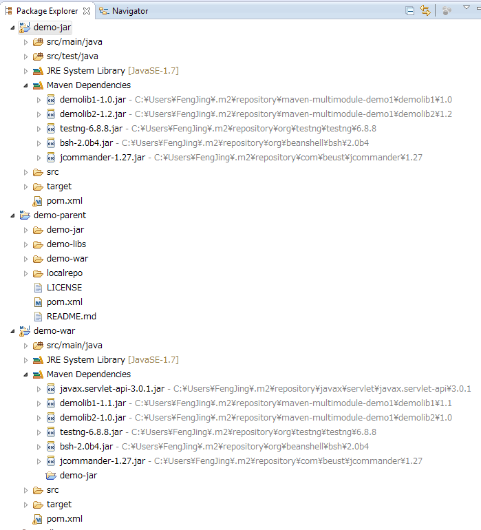
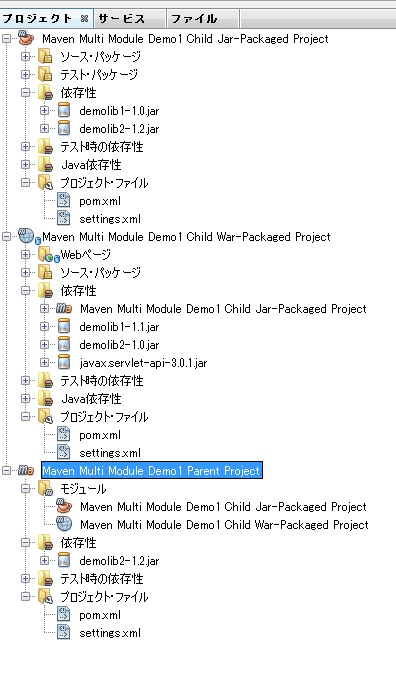

複数のMavenプロジェクトを束ねたmulti module型のプロジェクトのサンプル：
上記サンプルのポイントは、親のpom.xmlで定義したdependencyManagementとdependencyタグが、子のpom.xmlでどう扱われるか、という点。demolib1, demolib2で複数バージョン用意して、違いが分かるようにしています。
multi module型プロジェクトの作り方
multi module型のプロジェクトの作り方自体は、以下の記事を参考：
- Maven – Guide to Working with Multiple Modules
- Maven by Example - Chapter 6. A Multi-module Project - Sonatype.com
- 3. Maven 入門 (7) | TECHSCORE(テックスコア)
- Maven Assembly Plugin をマルチモジュールプロジェクトで使う - A Memorandum
dependencyManagement と pluginManagement
Maven公式よりは以下の記事の方が端的な回答になってて分かりやすいかも：
- java - Maven: what is pluginManagement? - Stack Overflow
- java - Maven dependency management for plugin dependencies - Stack Overflow
- Mavenでビルドする際の10のTips - cynipeと読む
- http://cynipe.hateblo.jp/entry/20101128/1290943804
- "2. ライブラリの定義はdependencyManagementで", "4. pluginの定義もpluginManagementで", "6. 共通の設定を持つ親POM必ず作る" 参照
- http://cynipe.hateblo.jp/entry/20101128/1290943804
IDE連携
Eclipse 4.2 (Juno) と NetBeans 7.4 で比較。
ポイント：マルチモジュール間のデバッグ、hotswap連携。
- demo-warとdemo-jarを両方開いた状態でdemo-warをデバッグ起動した時、それぞれのブレークポイントで止まり、特にdemo-jarで止まった時にdemo-jarのプロジェクトに移動してそこでブレーク箇所を表示してくれるか？
- 結果：Eclipse, NetBeans 両方OK
- demo-warとdemo-jarを両方開いた状態でdemo-warをデバッグ起動した時、demo-jar側の修正が、demo-war側の実行中のTomcatに即座に反映されるか？
- 結果：EclipseのみOK。NetBeansではdemo-war側のコード変更のみ、hotswapで反映された。
非常に単純な形式での実験になりますので、実際の開発環境での組み合わせによっては結果が変わる可能性もあります。上記結果は、著者個人の環境での、参考情報程度に扱って頂ければ。
maven-java-multimodule-demo1 を読み込ませたサンプル
Eclipse 4.2 (Juno) + m2e:

NetBeans 7.4:

demo-warをデバッグ実行した時のデバッグとhotswap
Eclipse 4.2 (Juno) + m2e or m2e-wtp:
- demo-war で Mavenのtomcat7:runをDebug起動し、"Debug Configuration" の "Source"タブで、 "Source Lookup Path" に予めdemo-warとdemo-jarを入れておけば、war/jarの両方でブレークポイントを自由に設定できる。
- J2EEパースペクティブに切り替え、m2e-wtpからの"Debug on Server"によりTomcat7でデバッグしても、war/jarの両方でブレークポイントを自由に設定できる。
- 特に意識してSource Lookup Path"を指定したわけではないが、スムーズ時demo-war, demo-jarの両方でブレークポイントを設定し、ソースと連動して止まってくれる。
- Eclipseの場合は、demo-warを起動した状態で、同じくEclipseで開いていたdemo-jarのソースを修正したら、即座にdemo-warのTomcat実行環境でも反映してくれた。
- "tomcat7:run", "Debug on Server" の両方で有効
- hotswap可能。
NetBeans 7.4:
- demo-war でTomcatでデバッグを開始すると、特にソースルックアップの調整なしに、demo-warとdemo-jarの両方でブレークポイント設定したところで止まってくれた。
- hotswapについては、demo-war側のみ。同時に開いていたdemo-jar側のコードを修正しても、demo-war側のTomcat実行環境には反映されなかった。
original url: https://www.glamenv-septzen.net/view/1307